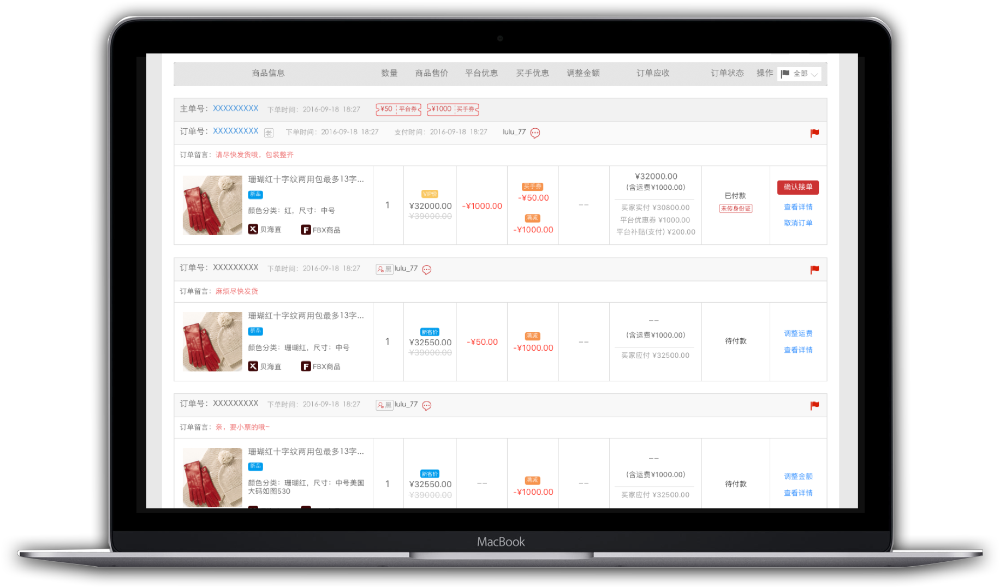
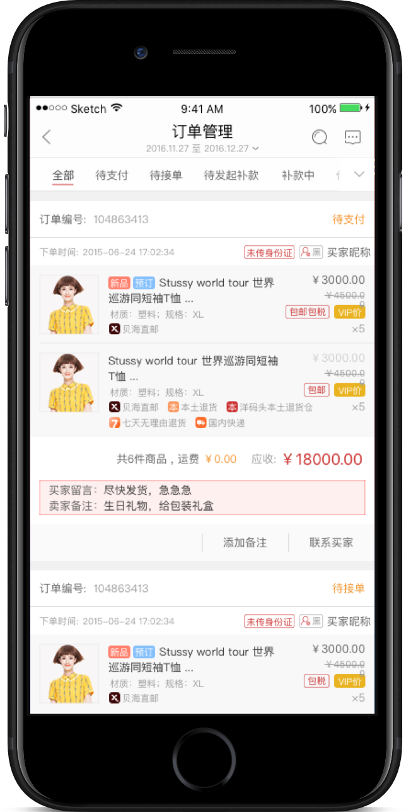

Component Library for Seller’s Platform of YMT
Overview
Time: 2016.08-
Compare with that designed for buyers, the platform (including website and app) designed for sellers is featured with multi-thread and multi-function. Sellers not only have a great opportunity to handle with various tables, forms and data, but also have to struggle with complex operations and settings. Therefore, in order to reduce their chance of making mistakes and prevent them from getting lost in the operation process, we should ensure the fluency and effectiveness of interaction and the consistency of page layout through establishing a component library. Moreover, it also can improve the effectiveness of developing and communicating part with a set of referable rules and extractable components. We established a component library for seller’s platform of YMT according to its own features and needs based on the component library shared by Ant Design.
Team Role
Role: Interaction Design
What I did: Establishing information hierarchyInteraction designHigh fidelity prototypesA part of UI design
Background of Project
Compare with that designed for buyers, the platform (including website and app) designed for sellers is featured with multi-thread and multi-function. Sellers not only have a great opportunity to handle with various tables, forms and data, but also have to struggle with complex operations and settings. I found that there were some issues influence user experience significantly, for example, some terms are not unified and layout of similar pages are not consistency, since I joined the team designed for seller’s platform of YMT in 2016.
In addition, we realized that even though the function and operating process is complex on the platform, many pages share similar layout and components. If we establish a library of these frequently used components and set norms and standards for extracting them in different scenarios, on one hand it will reduce users’ cognitive loads and learning cost and on the other hand, it will definitely accelerate the iteration and make developing process more efficient.
In this case, our team established the “Component Library for Seller’s Platform of YMT”, which is based on Ant Design provided by Alibaba, to benefit the designing and front-end developing process.
Component Library
Different from operating applications on mobile phone, people prefer to use mouse and keyboard instead of fingers when they react with computer. Since the plat form is designed different for computer and mobile phone, two components library had been established to satisfy our needs.
For example, the most common website pages of seller’s platform are list pages that help users to manage something closely related to their business. We defined the layout of these pages on different device as shown below.
Another example, the highly appearance of various feedbacks are pressed for ranking in terms of the interruption of flows and the importance of messages. So, we defined three kinds of reminder as follows.
WEB
Message
The light feedback. It is used when the system need to show users its status without interrupting their interaction flow. E.g., copy and login.
Popconfirm
It is shown with pointer. It is used when we need users to confirm their action with less interruption of their interaction flow.
Alert
It is shown on the center of screen with layer. It used when we need users to confirm their action to alert risk and ask them to correct their choice so as to continue.
APP
Message
The light feedback. It is shown closely to the input or touch-point without interrupting their interaction flow.
Toast
It is shown on the center of screen and disappears automatically after 3-5 seconds. It is usually used to show the system status.
The Component Library for Website

The Component Library for Application
Application Examples
Optimizing Business Line of Transaction
 Conclusion
The first version of component library just included part of components used on the seller’s platform. It is a long-term job to modify present components and establish a mature one which needs the cooperation from Interaction Designers, UI designers, project managers and front-end developers.
Homepage Redesign of Seller's Operation System of Ymatou
The Conceptual Design of City's Public Bicycle System
User Research of Overses Shopping